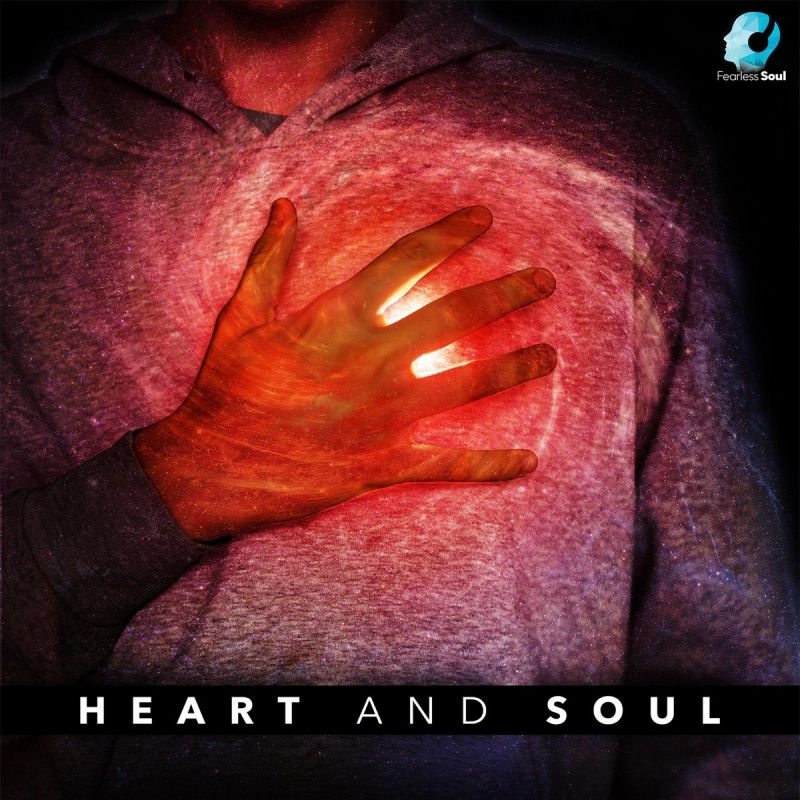

Menu
Kevin Saiza
Home
Portfolio
Certificates
My Life
MUSIC CREATIONS
Music that i made as a hobby a few years ago using fl studio.
Habits - Instrumental
Exile - Taylor Swit Instrumental

Heart & Soul Instrumental
Somethings Never Change - Frozen